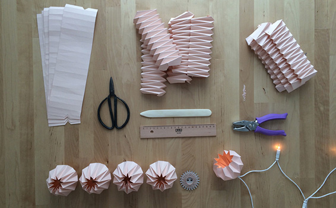
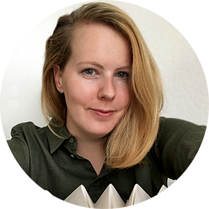

FALTBLATT is a small manufacture designing and creating hand-folded
paper lampshades and decorations based in Leipzig, Germany.

.About me

Hi there! My name is Ola, born in Poland, now living in Leipzig,
Germany. I studied photography and worked as a photographer for a
couple of years. After that I came to Germany for my master studies
(journalism and public relation) and after my graduation I’ve decided
to stay.
Because of that I was changing apartments a lot during last years. Constantly moving out and in every couple of months had forced me to limit the amount of my belongings, furniture and interior accessories also. But after my partner and I finally moved to our long-term flat, I just couldn’t wait to arrange it in our own, special way! I started looking for the lampshades to buy, but all I found just wasn’t right. So I decided to make them on my own, started googling the techniques and… this is how (accidentally) Faltblatt was born!
Interior design is and has always been my great passion and I had even thought about studying it, but eventually it turned out the other way. I don’t regret it though. During the years working as a photographer I developed great sensibility to light and the atmosphere it gives. I consider my work at Faltblatt as a continuation, next step or level on this path. My aim is to design light, aesthetic, minimalistic objects that give warm, peaceful and cozy feeling. I use for the lampshades exclusively white paper and use color only for the decoration products (i mean light strings). I want the light and the form to play the main role and don’t want to distract them by too many factors.
Less is more!
Because of that I was changing apartments a lot during last years. Constantly moving out and in every couple of months had forced me to limit the amount of my belongings, furniture and interior accessories also. But after my partner and I finally moved to our long-term flat, I just couldn’t wait to arrange it in our own, special way! I started looking for the lampshades to buy, but all I found just wasn’t right. So I decided to make them on my own, started googling the techniques and… this is how (accidentally) Faltblatt was born!
Interior design is and has always been my great passion and I had even thought about studying it, but eventually it turned out the other way. I don’t regret it though. During the years working as a photographer I developed great sensibility to light and the atmosphere it gives. I consider my work at Faltblatt as a continuation, next step or level on this path. My aim is to design light, aesthetic, minimalistic objects that give warm, peaceful and cozy feeling. I use for the lampshades exclusively white paper and use color only for the decoration products (i mean light strings). I want the light and the form to play the main role and don’t want to distract them by too many factors.
Less is more!
.Products
.Testimonials
Jonathan on Sep 26, 2018
The Ultimate Experience with Faltblatt
After moving to a new flat in Berlin, we faced a big dilemma: how to
arrange a typical high sealing space in our big kitchen. When we
came across Faltblatt, we had no doubt it is not only the design we
liked, but also an opportunity to bring to our new home an ultimate
experience, which can animate a social hot spot – our kitchen. The
execution surprised us as well. Attention to details. Perfect!
Katy on Jan 25, 2017
Absolutely gorgeous! I've been looking for something like this for months. It's perfect to hang on my coloured-flex wall pendant. The shade comes with a little ring to attach to the fitting then you just draw the string. It was so simple and looks beautiful. Thank you!
chrislin421 on Jun 6, 2017
Extremely fast and sincere customer service. Phenomenally beautiful and handcrafted origami. Would have been even better if the lights were a just a little bit warmer in tone.
.Contact